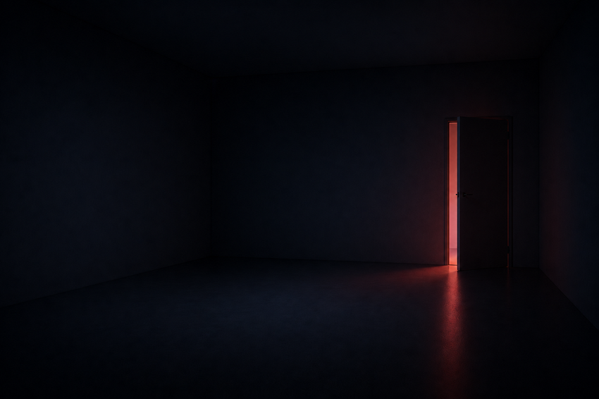

¿Pero dónde estoy?
No te alarmes. Simplemente has llegado a una idea, a un lugar que trato de construir a base de pensamientos, escritos..., a base de cualquier cosa, en realidad, para escapar de mis propios tormentos, de mi infierno particular que es todo aquéllo que se agolpa en mi cabeza y tengo que dejar salir de alguna manera. Y la forma elegida para darle salida ha sido en lo que yo llamo "palagrafías" y que tienes delante de ti.
Y si, además, como dijo Jean Paul Sartre
«L'enfer, c'est les autres» | (El infierno son los otros.)
Huis clos.
esto convierte a este lugar en una sociedad anónima, un lugar en el que los demás tienen también una responsabilidad, aunque limitada al monto de sus aportaciones, por supuesto.
Así que, sí, en cierta medida tú también formas parte de este lugar con su lectura, o con tu visita curiosa, o con tu comentario, tu aporte, tu crítica (ya sea constructiva o destructiva) o con lo que quiera que sea que hagas aquí.
Ya lo has visto; aquí cabe todo el mundo.
¿Cómo no iba pues a darte la bienvenida?